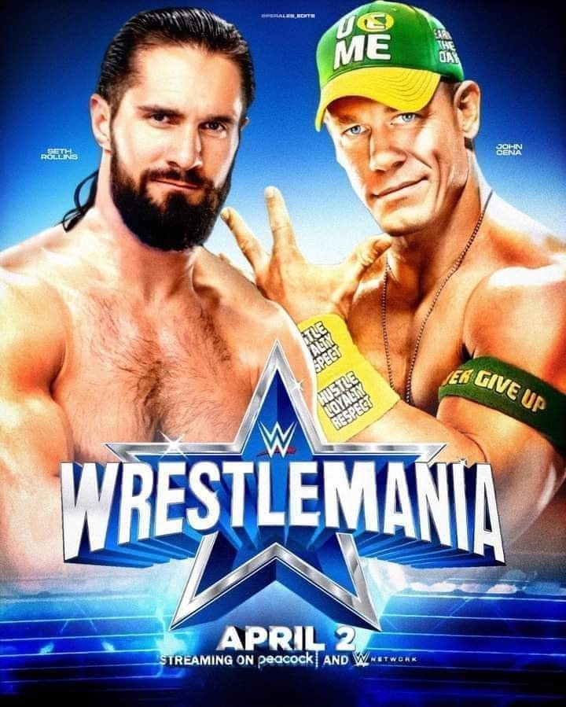
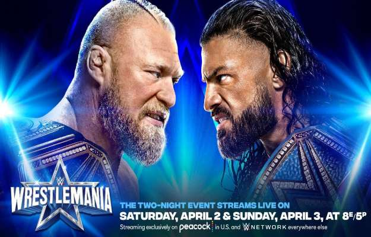
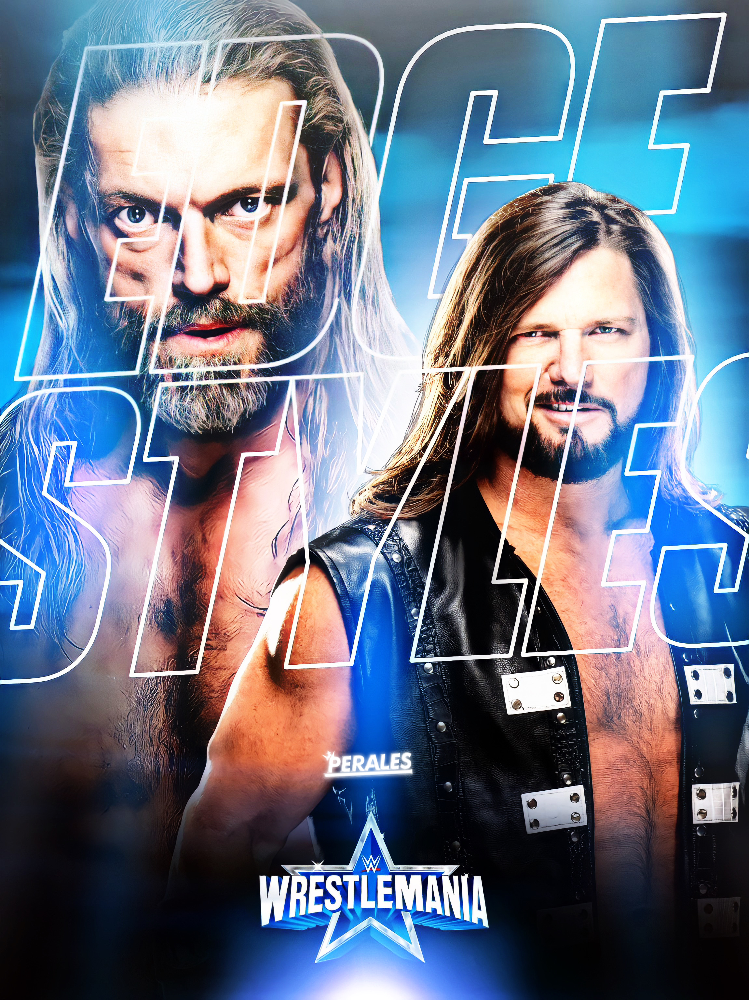
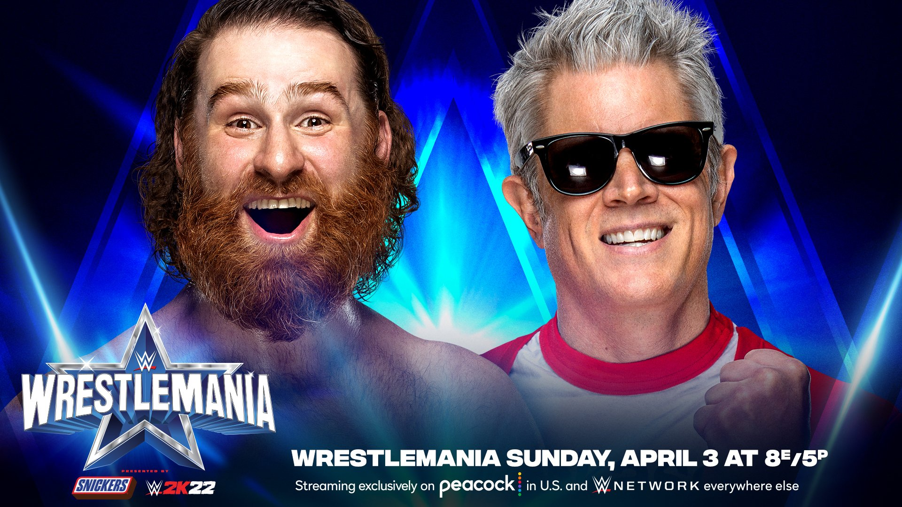
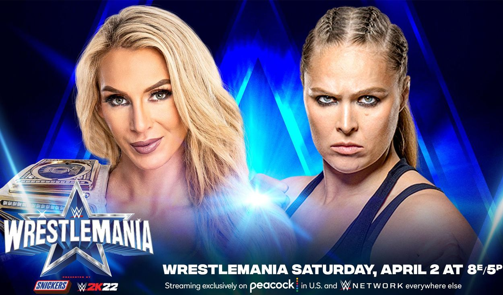
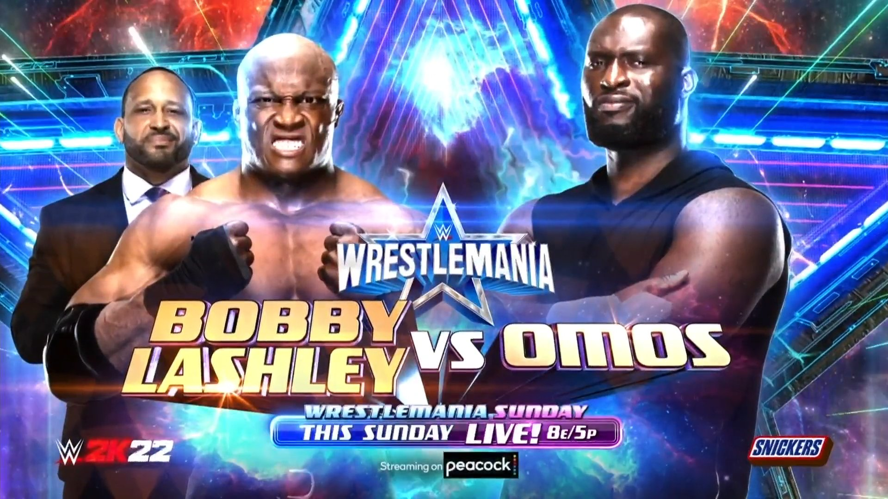
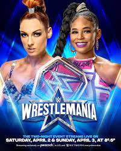
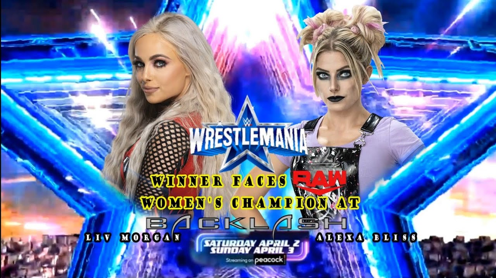

WWE vuelve a la carretera en abril
Tras más de un año de pandemia provocada por el coronavirus, las buenas noticias empiezan a llegar y para el negocio del wrestling, eso se traduce en la vuelta de los shows en vivo y la vuelta del publico.
Dentro del vestuario de WWE, hay muchas ganas de volver a reencontrarse con la gente tras una epoca muy dura.El periodista Mike Johnson del portal PW insider asi lo ha hecho saber en una nota publicada al termino del episodio de RAW:
▒Los talentos están muy entusiasmados con el regreso a la carretera.Algunos tienen la esperanza de que los derechos de autor de los eventos en directo les proporcionen ganancias. Otros estan siendo cautelosos en las expectativas sobre como los espectaculos se dibujaran y hay mucho interes en como los espectaculos iniciales se vendan cuando se pongan a la venta el miercoles, especialmente antes del mas grande evento de WWE Wrestlemenia, ya que es un espectaculo PPV▒
Mike Johnson
Videos
Gran noche la que se celebro en wrestlemania 31
Seth Rollins canjea el contrato de Money in the Bank: WrestleMania 31. Seth Rollins interrumpe la defensa del Campeonato Mundial de Peso Completo WWE de Brock Lesnar ante Roman Reigns y se convierte en la primera Superestrella en canjear el maletín de Money in the Bank en un WrestleMania.
Para activar el audio clic derecho (mostrar todos los controles) :)
¿QUIEN ES AJ Styles? Allen Neal Jones es un luchador profesional estadounidense,más conocido por su nombre en el ring AJ Styles. Nació en Gainesville, georgia, esdos unidos el 2 de junio de 1977. Syles trabaja para la promoción de la lucha libre profesional WWE en su marca SmackDown Live.
AJ Styles ya era una super strella antes de WWE, trabajo 11 años en la empresa Total Nonstop Action Wrestling(TNA)entre 2002-2013 y ser campeón mundial de cuatro empresas distintas, siendo estas (NJPW,PWG,TNA y WWE).Styles es diez veces Campeón Mundial, al haber obtenido tres veces el Campeonato Mundial Peso Pesado de la NWA, dos veses el Campeonato Mundial Peso Pesado de la TNA, dos veses el Campeonato Peso Pesado de la IWGP, una vez el Campeonato de la PWG y dos veses el Campeonato de la WWE. Ahora se encamina a Wrestlemania para enfrentar por primera vez a la super estrella categoria "R" EDGE.
Roman Reings
Roman Reings es una de las estrellas de la WWE. Odiado por muchos,querido por otros tantos no deja indiferente a nadie cada vez que aparece en las Noticias de WWE y en los programas semanales de la compañia. Tras su paso por The Shield Roman Reings lo ha ganado casi todo en WWE RAW , siendo campeon mundial de la WWE, campeon de estados unidos, campeon en parejas, y ganador del Royal Rumble y tambien derroto a the Undertaker en Wrestlemania 33 , siendo el segundo luchador en conseguirlo tras Brock Lesnar.
Jeff Hardy
WWF, se intereso por los hermanos Hardy y les ofresio un contrato. Jeff mintio en su edad para poder firmarlo y debuto en un show de la world wrestling federation con 16 años, diciendo que tenia 18. Jeff tiene un estilo de lucha extremo pero no sangriento. especializado en saltos desde las alturas, saltos tan sorprendentes que lo hacen uno de los favoritos de los mas pequeños. Jeff hardy logro en multiples ocaciones ser campeon en parejas de la WWE junto a su hermano Matt. Ademas consiguio el campeonato de la WWE antes de abandonar la compañia.
Fotografías
  Noticias
WRESTLEMANIA
WrestleMania es el PPV más grande e importante de la WWE, con 35 ediciones en su haber. Ha llenado estadios con más de 100000 personas, así como luchas de ensueño y grandes carteles. Sin duda es la noche en la que las superestrellas marcan historia en el deporte espectáculo.
Gran spoiler sobre el regreso de Cody Rhodes a WWE
Un secreto a voces es la firma de Cody Rhodes con WWE y lo que podría ser una lucha en WrestleMania. Ahora tenemos la información con mayor posibilidad a ocurrir sobre su gran regreso.
Durante el fin de semana Seth Rollins estuvo hablando en redes sociales y durante un evento en vivo sobre una reunión privada con Vince McMahon en las oficinas de WWE. Según reporta el Wrestling Observer Radio, ya hay incluso segmentos grabados de dicha reunión. Todo parece indicar que esta noche en RAW tendremos como centro de la noche, la historia de Seth Rollins y su plan para WrestleMania, donde de alguna manera será presentado Cody Rhodes, aunque se desconoce si su debut será esta noche o será hasta el fin de semana. Es importante mencionar que WWE le ha puesto esta noche el nombre especial de “WrestleMania RAW” al show y el regreso de Cody Rhodes podría ser la sorpresa más grande de esta noche.
Logan Paul revela su equipo para WrestleMania 38
Logan Paul es sin duda una de las celebridades de Internet más conocidas en la memoria reciente debido a su excelente canal de YouTube y también a su carrera en el boxeo. Las acciones de Logan Paul continúan aumentando y no fue una sorpresa que también llegara a la WWE.
Paul también apareció como parte de WrestleMania 37 el año pasado en la pelea entre Sami Zayn y Kevin Owens. A la mayoría de los fanáticos de la WWE tampoco les importaba necesariamente quién era Logan. Logan Paul luego hizo una aparición durante un episodio anterior de Monday Night RAW. Salió como el compañero de The Miz y presentó a Rey y Dominik Mysterio.